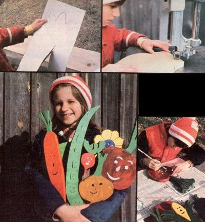

For Gifts Or Profit... Make Row Markers!
May/June 1981
Issue # 69 - May/June 1981
One of those "old-fashioned" ideas that seems to be too often forgotten these days is the concept of expecting young people to initiate and take responsibility for their own constructive projects. MOTHER feels strongly that youths, as well as adults, can be creative "doers", working toward an ecological and selfreliant lifestyle . .. whether their tasks be raising chickens on an isolated farm or maintaining rooftop container gardens in the inner city. As part of our efforts to support the endeavors of our often overlooked "underage" citizens, we're presenting this regular series of articles written for and by MOM's younger readers.
by Julie Driscoll
My mother is a fanatic gardener, so whenever we children are trying to decide on a gift for her, we always know that she'll be happy to get something to use in her garden. (Grandpa even gave her a truckload of manure one year, and Mom said it was about the best gift she could have received.)
So, when I was five, I decided to make a large wooden tulip to decorate one of Mom's rows. With my dad's help, I built it, painted it, and fastened a stake to it. I told my mother the tulip would keep the bugs out of our sweet corn. It didn't exactly do that, but it did give me the idea to make whole sets of row markers.
My creations are larger-than-lifesized, colorful wooden vegetable shapes. The markers are attached to stakes and placed in the garden to identify the spring plantings. (And, to make the gardeners smile, I paint happy faces on each vegetable-shaped sign.)
I made my first set of six mark ers for Mother's Day four years ago. Mom was so thrilled by the present that I painted her a different set the next year.
When one of our neighbors saw my smiling vegetables, she wanted some for her own garden. I made her a set, and she gave me $16. Before I knew it, everyone wanted markers, and the rush was on. It seemed like the more sets I made, the more I sold. As a matter of fact, by last year I'd gotten so bored with all the sanding and priming work involved that I didn't make any markers at all!
This year, though, I'm cutting out vegetables again. I guess I'll be doing it for quite a while, too, because I'm using the money I make to pay back half of the cost of my wonderful new seven-year-old Morgan gelding, Croix. I'm working on eight batches now (these days I sell each set for $25). When I finish those, I can get started on the other three sets that have already been ordered. And I know I'll be able to sell some more vegetable row markers at our local farmers' market.
Believe it or not, I've also made money by selling articles about my markers. THE Mother Earth News is the second magazine to ask me to tell about them. In February 1980 I was the cover girl (along with my painted vegetables) on The Family Food Garden. I spent two weeks at a summer camp with my profits from that story.
So I've earned spending money, I've gone to camp, and I'm helping pay for a horse . . . all because of vegetable row markers. How's that for profiting from an idea?
EDITOR'S NOTE: MOTHER is glad to publish well-written articles from both younger children and teenaged youth concerning projects they have done. However, we recommend that all young authors query (that is, send us a letter telling ail about the story you'd like to do) before starting to write a full article. Address inquiries to Mother's Children, THE Mother Earth News (restricted) , P.O. Box 70, Hendersonville, North Carolina 28791.
HOW TO MAKE VEGETABLE ROW MARKERS YOURSELF
[1] Outline vegetable shapes on paper and cut them out. These forms will serve as your patterns. Sometimes I forget exactly what a vegetable looks like, so I study Mom's seed catalogs for inspiration. I make my vegetables very large-one to two feet long!-so they can be seen easily after the garden grows. And I'm careful not to give them thin "stems", because I've found that sturdy vegetables survive longer than the fragile ones do.
[2] Arrange the patterns, close together, on a 1 X 10 or 1 X 12 pine board (you could probably use another kind of wood if you don't find pine lumber). Try to keep the forms away from any knots and, to give the markers strength, place the pieces so that their longest dimension lines up with the grain of the wood. When you've puzzled out the most efficient arrangement, trace the patterns with a pencil.
[3] Now it's time for you to cut. A saber saw is a very heavy tool for me to handle, and our jigsaw is slow going, so I like to use our neighbor's band saw the best. Dad always explains the safest methods of sawing to me, and he shows me how to hold the wood so that my fingers are away from the blade. If I run into problems, I just turn off the saw and ask for some help.
[4] Next comes sanding. I always try to do this thoroughly and carefully, because rough edges are sharp and make the markers unpleasant to handle. I've used plain sandpaper, but my dad's disk sander is much quicker.
[5] Put a layer of primer on the vegetables to help them last when they're out in the wind and weather. I used to prime by hand with a paintbrush, but this year I discovered that dipping is an easier way. My brother John (I've hired him to help me with the priming) or I just pound a small nail partway into each marker, bend the nail, dip the marker in the primer, and then hang the vegetable on a wire. A pan placed underneath the markers catches the drips.
[6] When the primer dries, you should paint each vegetable with two coats of its basic color.
[7] Then comes my favorite part of all . . . painting the faces. Every face is special because it's different from all the others. When I start painting the faces, I know I'm almost done with my project.
[8] The final step is to screw stakes to the backs of the markers. I always use cedar or redwood for the stakes because those woods don't rot easily. I also make sure to attach the stakes to the markers so that the top of each stake is slightly above the marker top. That way, people pound on the stake, and not on the marker, when they're putting the wooden vegetables in their gardens.
 |
 |
|